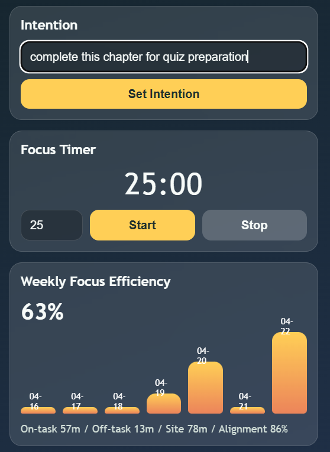
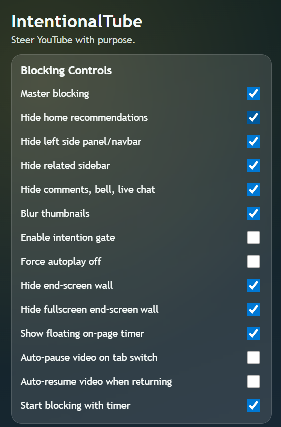
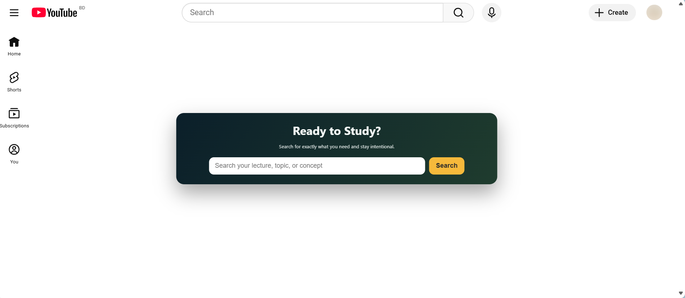
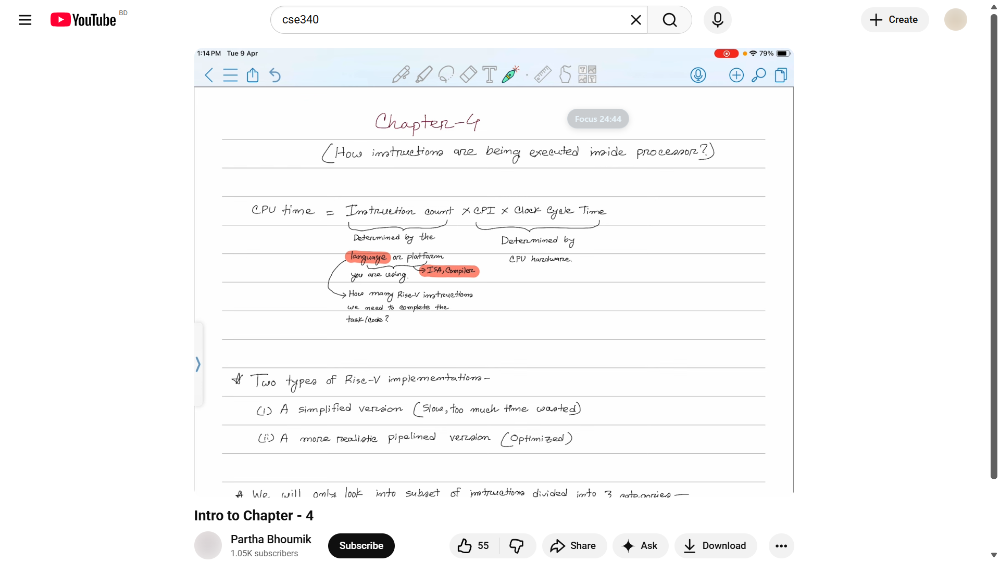
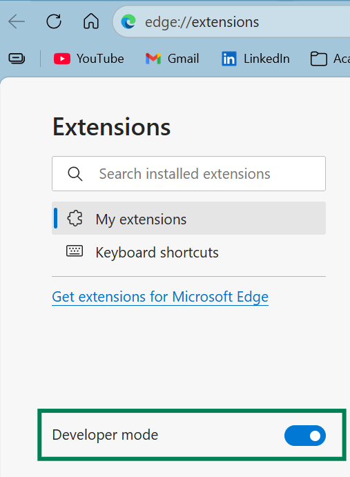
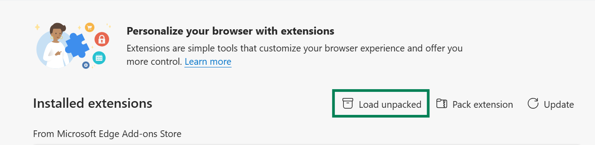
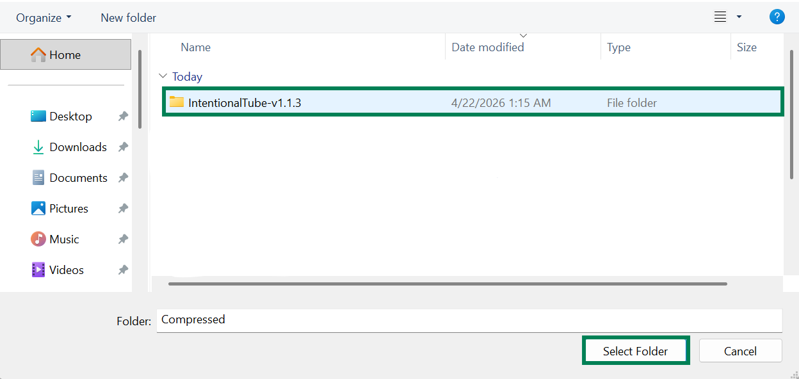

Start With Blocking Controls

Enable the distraction controls you want before starting your session.

Chrome Extension
Reduce YouTube distractions and keep your study sessions intentional.
A quick flow of how IntentionalTube helps you stay intentional from search to watch time.

Enable the distraction controls you want before starting your session.

Set a concrete study intention and run a focused timer.

Search intentionally through the guided home-page overlay.

Keep focus context visible while you watch learning content.

Go to chrome://extensions or edge://extensions and enable Developer mode.

Use Load unpacked from the extensions toolbar.

Select the extracted IntentionalTube version folder to install.